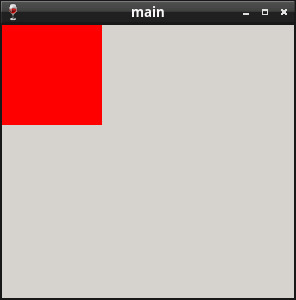

Steward
分享是一種喜悅、更是一種幸福
程式語言 - Flat Assembler (FASM) - Win32 API - Set Pixel
參考資訊：
https://board.flatassembler.net/
屏幕的最小顯示單位是像素，像素由紅色(Red)、綠色(Green)、藍色(Blue)、Alpha等四個顏色組成，因此，在呼叫CreateWindow()時，傳入的解析度，如：300x300，代表該視窗(有效區域)的X軸有300個像素，而Y軸則是有300個像素，這個300x300像素的區域是可以用來繪製任何東西，WM_PAINT是處理視窗重新繪畫的事件，繪畫的相關處理都需要在這個事件完成，比較特別的是，Windows視窗將繪圖的許多東西抽象化，最基本的需求是：一個DC(Device Context)和一個BITMAP，DC可以想像成是一個畫台，而BITMAP則是一片畫布(Buffer)，DC有了Buffer就可以畫上任何東西並將其顯示在視窗上
main.asm
include "head.asm"
section ".text" code readable executable
proc WndProc hWnd, uMsg, wParam, lParam
local x:DWORD
local y:DWORD
local hdc:DWORD
local ps:PAINTSTRUCT
mov eax, [uMsg]
cmp eax, WM_PAINT
je .handle_paint
cmp eax, WM_CLOSE
je .handle_close
cmp eax, WM_DESTROY
je .handle_destroy
invoke CallWindowProc, [pDefWndProc], [hWnd], [uMsg], [wParam], [lParam]
jmp .finish
.handle_paint:
lea eax, [ps]
invoke BeginPaint, [hWnd], eax
mov [hdc], eax
xor eax, eax
mov [y], eax
.ylp:
xor eax, eax
mov [x], eax
.xlp:
invoke SetPixel, [hdc], [x], [y], 0ffh
inc dword [x]
cmp dword [x], 100
jb .xlp
inc dword [y]
cmp dword [y], 100
jb .ylp
lea eax, [ps]
invoke EndPaint, [hWnd], eax
xor eax, eax
jmp .finish
.handle_close:
invoke DestroyWindow, [hWnd]
xor eax, eax
jmp .finish
.handle_destroy:
invoke PostQuitMessage, 0
xor eax, eax
jmp .finish
.finish:
ret
endp
proc WinMain hInst, hPrevInst, CmdLine, CmdShow
local msg:MSG
invoke CreateWindowEx, WS_EX_LEFT, WC_DIALOG, szName, \
WS_OVERLAPPEDWINDOW or WS_VISIBLE, 0, 0, 300, 300, NULL, NULL, NULL, NULL
mov [hWin], eax
invoke SetWindowLong, [hWin], GWL_WNDPROC, WndProc
mov [pDefWndProc], eax
@@:
lea eax, [msg]
invoke GetMessage, eax, NULL, 0, 0
cmp eax, 0
je @f
lea eax, [msg]
invoke DispatchMessage, eax
jmp @b
@@:
mov eax, [msg.wParam]
ret
endp
start:
invoke GetModuleHandle, NULL
mov [hInstance], eax
invoke GetCommandLine
mov [pCommand], eax
stdcall WinMain, [hInstance], NULL, [pCommand], SW_SHOWNORMAL
invoke ExitProcess, eax
Line 20~42：處理繪畫事件
Line 22~23：取得視窗的DC，該DC已經有Buffer可以使用，因此，可以直接在上面繪製任何東西
Line 25~37：透過SetPixel()畫出一個正方形，顏色是紅色
Line 39~40：結束繪製
完成
